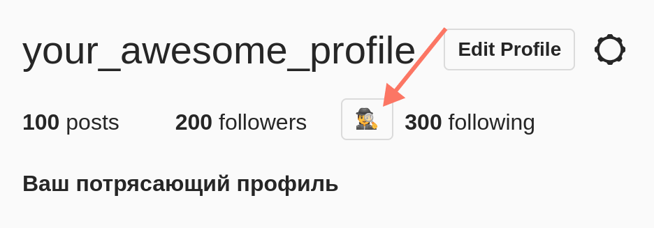

☝️
Это расширение предназначено в первую очередь для сканирования своего профиля
(тот провиль для которго выполнен вход в браузере).
Вы можете использовать его для сканирования другого профиля но возможны наточности из-за особенностей
работы вэб версии Instagram.
Чтобы начать откройте страницу своего профиля в
instagram и нажмите кнопку сканирования
